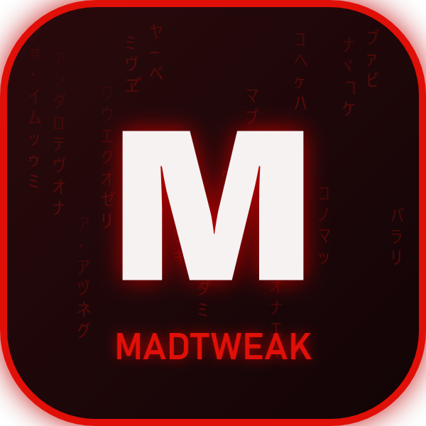
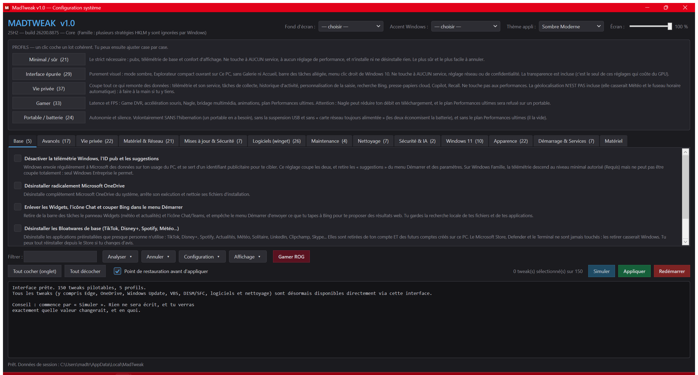

Windows optimisation you stay in control of. 150 reversible tweaks, a full machine audit, and above all real undo: every value touched is backed up before it is written. Free, open source, and placebo-free.
powershell.exe -NoProfile -ExecutionPolicy Bypass -File .\MadTweak.ps1
No need to open the console "as administrator": MadTweak requests elevation (UAC) itself at startup.
-Langue en, or pick a language in the window header.
The project is written in French first; English was added to make it usable elsewhere.
Every setting permanently shows what it does and what it costs — not hidden in a tooltip nobody reads. Nothing is written until you click « Appliquer » (Apply).

A single PowerShell file, zero dependencies: no installer, no runtime, no background service.
Everything runs through a themeable GUI — or 16 console menus if you prefer the keyboard.
Telemetry, ads, Copilot, Recall, Store bloatware. 5 profiles to apply a coherent batch at once, or tick them one by one.
Every value is backed up before it is written. Exact restore, all at once or tweak by tweak. Plus a Simulation mode to see everything without writing anything.
A score out of 100 computed from 104 real checks, broken down by category. Settings that don't apply to your machine are excluded from the scale.
The real duration measured by Windows, and the cost in seconds of every program launched at boot. Same source as Task Manager.
Every reclaimable item is weighed before any cleanup: temp files, caches, Windows.old, hibernation. Measured, never guessed.
Cross-references recent unexpected shutdowns and blue screens with active power settings, and names the suspects.
A Windows update silently re-enabled telemetry? MadTweak spots what was reverted and puts it back in one click.
6 UI themes, Windows accent colour, and « MadTrix » wallpapers generated by code in the colour you pick.
Generates the answer file to drop on your USB stick: language, account, applications and profile decided before setup runs. No Windows image is shipped — generate, don't bundle.
RGB keyboard driven over raw HID, with no third-party software. Live GPU and fan sensors, screen and keyboard brightness.
An optimiser that breaks a machine hasn't optimised anything. These rules live in the code, not in a promise.
Rather than applying a setting that would hurt this particular machine, it raises an explanatory error: SysMain on a mechanical hard drive, the Ultimate Performance plan on a laptop, forced S3 sleep on a modern standby platform — a real case that was causing crashes on resume from hibernation.
A tweak that can't act prints [FAILED] with its reason. There are no silent successes.
System drive type, NPU presence, Windows edition, cache sizes, network adapters: all read at runtime, never guessed.
Popular but inert or harmful tweaks are deliberately excluded, with the reason documented: LargeSystemCache, standby list flushing, disabling IPv6…
Every setting permanently shows what it does and what it costs. A setting you don't understand is a setting you apply badly.
Same philosophy, same ROG identity. Bash doesn't run on Windows and PowerShell doesn't drive KDE: the two projects share an identity, not files.
Tunes and cleans an existing system. 150 reversible tweaks, full audit, exact undo.
You are hereInstalls and transforms a fresh system into a gaming station: XanMod kernel, GPU drivers, asusctl, themed KDE.
DISCOVER MADOS →